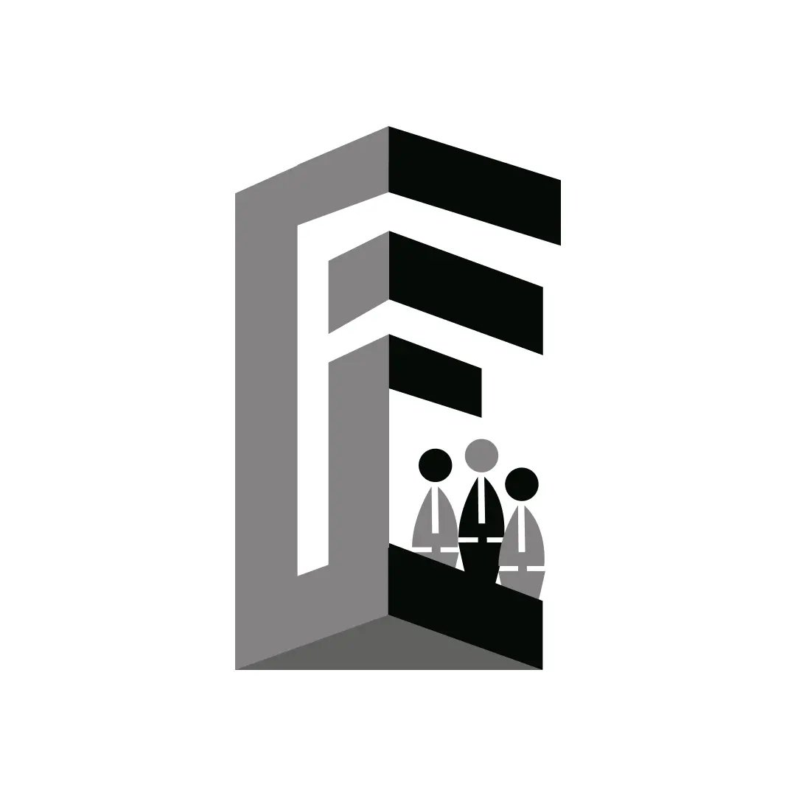

Founders Club
Founders Club Strategizes and executes events, while broadcasting the activities to ensure maximum impact. Be the driving force behind our club's affairs and engagements. Builds bridges with startups, E-Cells, and the broader community to expand our network and influence. Connect and collaborate to create valuable partnerships. Developing innovative technical solutions to create and maintain in-house projects within DEI. Use your skills to turn ideas into functional realities!
Team Domains are:
- Technical
- R & D (Research & Development)
- Sponsorships
- Operations & Marketing
- Creatives